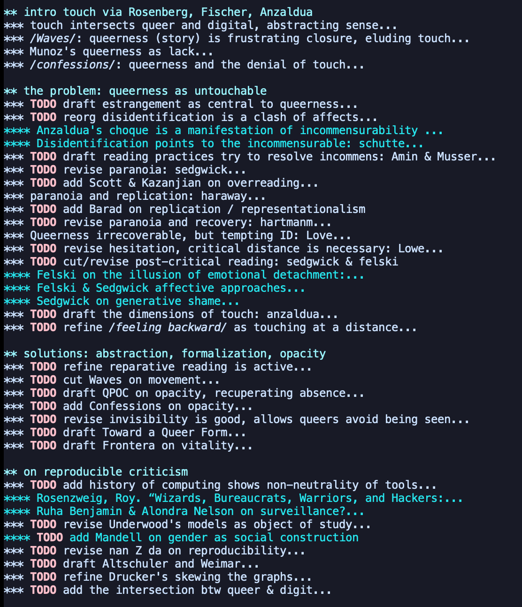

About a week ago I converted my chapter document into a word doc. Until now, I've only been engaging with the draft on through the text editor Emacs using Org Mode, an amazing format that allows you to collapse paragraphs and outlines to make writing cleaner and more navigable. As a result, however, I didn't have a sense of how long my document was until I opened it in Word. Turns out I have 34 pages single spaced. And I still need to draft what I think will take up about one third of the chapter. Clearly, some revision and reorganization is necessary.
So I took the week to go through the entire doc, writing concise notes and outlines of my work so far, and flagging things that still need to be done. Below is an image of the first 2/3 or so of the chapter draft, showing the outline and flags for specific sections:

After taking this time to step back and see the big picture, I feel a lot better about the work that I've already achieved, though almost all of the paragraphs need some work in revising and refining. There's still a long way to go, but there's also an arc here, a form of my argument that takes shape despite the gaps.
For now, I'm going to set some goals: - first, the next week (July 27) I will draft the final third of the chapter. This will be hard work. - the next two weeks, (august 3 & 10) will be spent on cleaning up the first three sections, "intro to touch" and "queerness as untouchable," and "solutions." This is to prepare for sharing those pages with my Undercommons writing group in mid-August. - then, starting August 17 until September, I'll revise the rest of the chapter, fulfilling any lingering TODOs - following this schedule, by the end of August I will hopefully have something, even if not perfect, to send to Matt.
As I revise, I find myself more and more myred in the various definitions of queerness. It will be important to keep the following in mind: - Being queer is, at its core, a desire for connection---with oneself or with others---that is continually thwarted by the oppression, categories, and heteronormativity of dominant culture. Queerness which we can only engage within formalized or opaque structures---the formal experiments of queer writers. - The "untouchable" denotes a state of suspended knowledge (about queer subjectivity and experience) that allows me to then turn to feeling and affect as epistemological methods.